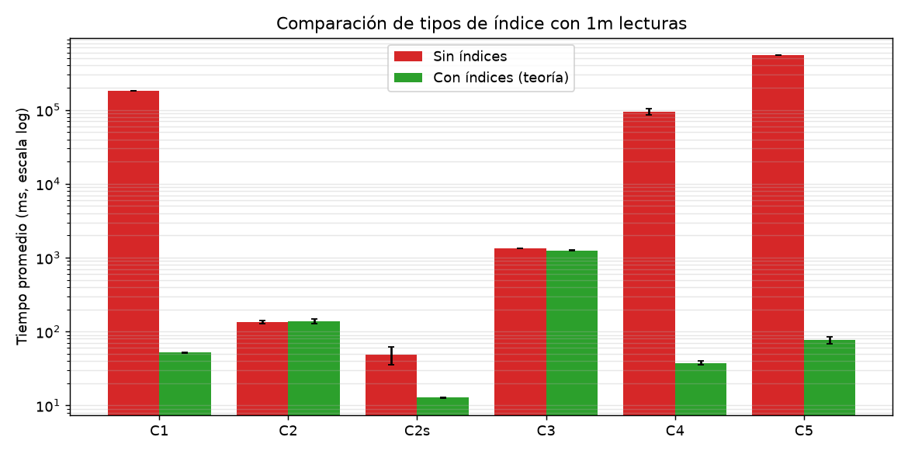
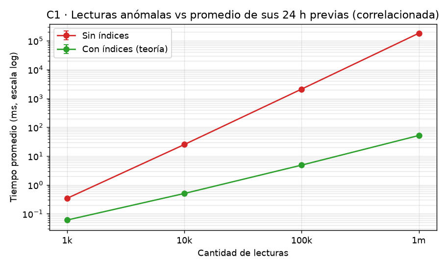
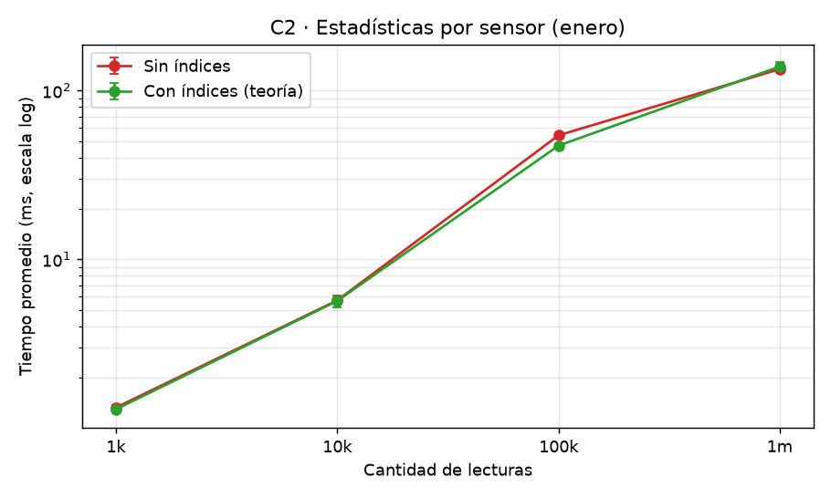
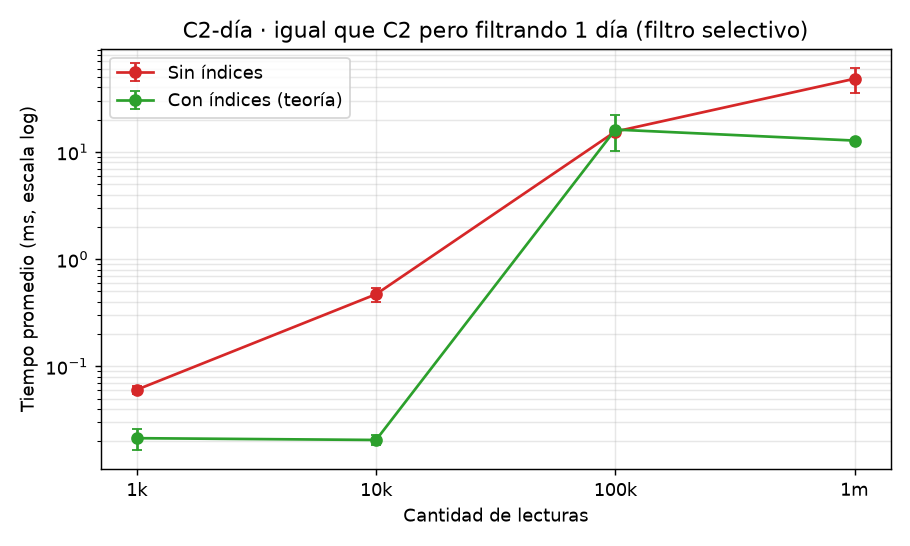
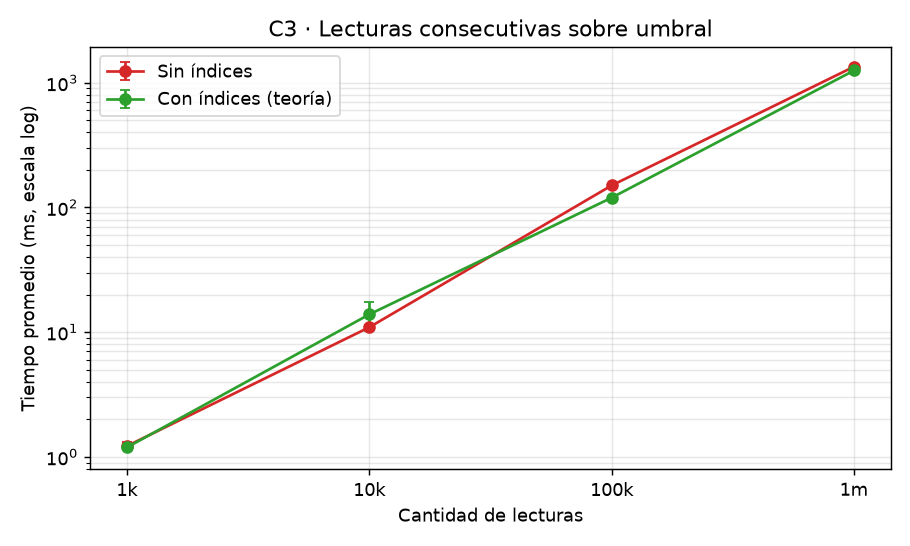
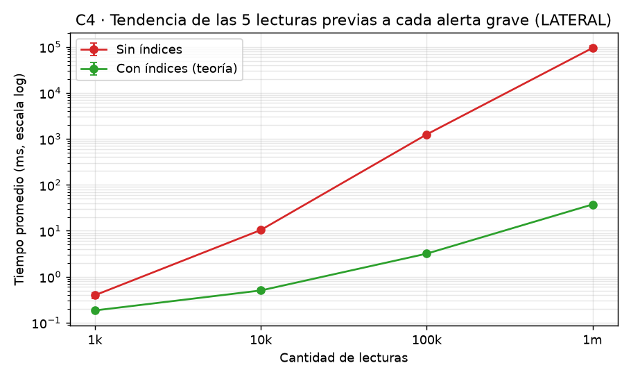
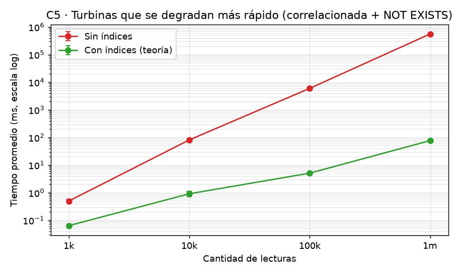
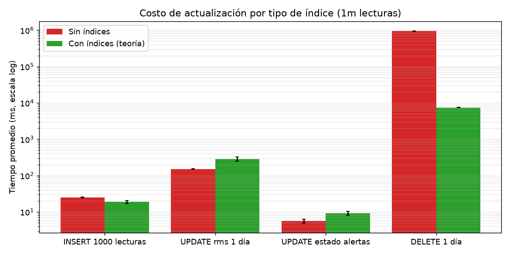
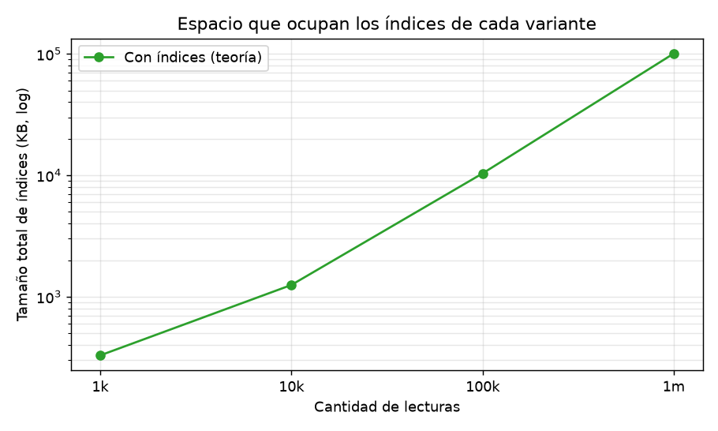

5 ejecuciones por medición (más 1 de calentamiento) · tiempo = Execution Time de
EXPLAIN (ANALYZE) · generado 2026-11-16 21:53


| Escala | Variante | Promedio (ms) | Desv. est. | vs sin | ¿Usó índice? | Veredicto | Acceso usado en el plan |
|---|---|---|---|---|---|---|---|
| 1k | Sin índices | 0.342 | 0.021 (n=5) | no | Seq Scan(lecturavibracion) | ||
| 1k | Con índices (teoría) | 0.060 | 0.004 (n=5) | -82.3% | sí | Mejora real | Bitmap Heap Scan(lecturavibracion); Bitmap Index Scan[idx_btree_lectura_rms]; Index Only Scan[idx_btree_lectura_sensor_fecha] |
| 10k | Sin índices | 25.144 | 0.736 (n=5) | no | Seq Scan(lecturavibracion) | ||
| 10k | Con índices (teoría) | 0.504 | 0.016 (n=5) | -98.0% | sí | Mejora real | Bitmap Heap Scan(lecturavibracion); Bitmap Index Scan[idx_btree_lectura_rms]; Index Only Scan[idx_btree_lectura_sensor_fecha] |
| 100k | Sin índices | 2103.044 | 24.761 (n=5) | no | Seq Scan(lecturavibracion) | ||
| 100k | Con índices (teoría) | 4.856 | 0.211 (n=5) | -99.8% | sí | Mejora real | Bitmap Heap Scan(lecturavibracion); Bitmap Index Scan[idx_btree_lectura_rms]; Index Only Scan[idx_btree_lectura_sensor_fecha] |
| 1m | Sin índices | 182564.261 | 0.000 (n=1) | no | Seq Scan(lecturavibracion) | ||
| 1m | Con índices (teoría) | 51.759 | 0.779 (n=5) | -100.0% | sí | Mejora real | Bitmap Heap Scan(lecturavibracion); Bitmap Index Scan[idx_btree_lectura_rms]; Index Only Scan[idx_btree_lectura_sensor_fecha] |

| Escala | Variante | Promedio (ms) | Desv. est. | vs sin | ¿Usó índice? | Veredicto | Acceso usado en el plan |
|---|---|---|---|---|---|---|---|
| 1k | Sin índices | 1.323 | 0.045 (n=5) | no | Seq Scan(lecturavibracion) | ||
| 1k | Con índices (teoría) | 1.291 | 0.023 (n=5) | -2.4% | no | Empate: el plan no usa índices | Seq Scan(lecturavibracion) |
| 10k | Sin índices | 5.709 | 0.063 (n=5) | no | Seq Scan(lecturavibracion) | ||
| 10k | Con índices (teoría) | 5.666 | 0.467 (n=5) | -0.8% | no | Empate: el plan no usa índices | Seq Scan(lecturavibracion) |
| 100k | Sin índices | 54.213 | 0.340 (n=5) | no | Seq Scan(lecturavibracion) | ||
| 100k | Con índices (teoría) | 47.133 | 1.045 (n=5) | -13.1% | no | Empate: el plan no usa índices | Seq Scan(lecturavibracion) |
| 1m | Sin índices | 133.804 | 5.718 (n=5) | no | Seq Scan(lecturavibracion) | ||
| 1m | Con índices (teoría) | 138.614 | 9.301 (n=5) | +3.6% | no | Empate: el plan no usa índices | Seq Scan(lecturavibracion) |

| Escala | Variante | Promedio (ms) | Desv. est. | vs sin | ¿Usó índice? | Veredicto | Acceso usado en el plan |
|---|---|---|---|---|---|---|---|
| 1k | Sin índices | 0.061 | 0.005 (n=5) | no | Seq Scan(lecturavibracion) | ||
| 1k | Con índices (teoría) | 0.021 | 0.005 (n=5) | -64.7% | sí | Mejora real | Index Scan[idx_btree_lectura_fecha] |
| 10k | Sin índices | 0.471 | 0.069 (n=5) | no | Seq Scan(lecturavibracion) | ||
| 10k | Con índices (teoría) | 0.021 | 0.002 (n=5) | -95.6% | sí | Mejora real | Index Scan[idx_btree_lectura_fecha] |
| 100k | Sin índices | 15.504 | 0.154 (n=5) | no | Seq Scan(lecturavibracion) | ||
| 100k | Con índices (teoría) | 16.186 | 5.961 (n=5) | +4.4% | sí | Empate: dentro del ruido | Index Scan[idx_btree_lectura_fecha] |
| 1m | Sin índices | 48.256 | 12.948 (n=5) | no | Seq Scan(lecturavibracion) | ||
| 1m | Con índices (teoría) | 12.784 | 0.143 (n=5) | -73.5% | sí | Mejora real | Index Scan[idx_btree_lectura_fecha] |

| Escala | Variante | Promedio (ms) | Desv. est. | vs sin | ¿Usó índice? | Veredicto | Acceso usado en el plan |
|---|---|---|---|---|---|---|---|
| 1k | Sin índices | 1.220 | 0.089 (n=5) | no | Seq Scan(lecturavibracion) | ||
| 1k | Con índices (teoría) | 1.190 | 0.030 (n=5) | -2.5% | no | Empate: el plan no usa índices | Seq Scan(lecturavibracion) |
| 10k | Sin índices | 10.947 | 0.285 (n=5) | no | Seq Scan(lecturavibracion) | ||
| 10k | Con índices (teoría) | 13.878 | 3.710 (n=5) | +26.8% | sí | Empate: dentro del ruido | Index Only Scan[idx_btree_lectura_sensor_fecha] |
| 100k | Sin índices | 150.219 | 0.720 (n=5) | no | Seq Scan(lecturavibracion) | ||
| 100k | Con índices (teoría) | 119.800 | 0.487 (n=5) | -20.2% | sí | Mejora real | Index Only Scan[idx_btree_lectura_sensor_fecha] |
| 1m | Sin índices | 1347.347 | 4.788 (n=5) | no | Seq Scan(lecturavibracion) | ||
| 1m | Con índices (teoría) | 1255.351 | 12.909 (n=5) | -6.8% | sí | Mejora real | Index Only Scan[idx_btree_lectura_sensor_fecha] |

| Escala | Variante | Promedio (ms) | Desv. est. | vs sin | ¿Usó índice? | Veredicto | Acceso usado en el plan |
|---|---|---|---|---|---|---|---|
| 1k | Sin índices | 0.396 | 0.054 (n=5) | no | Seq Scan(alertamantenimiento); Seq Scan(lecturavibracion) | ||
| 1k | Con índices (teoría) | 0.185 | 0.018 (n=5) | -53.3% | sí | Mejora real | Seq Scan(alertamantenimiento); Index Only Scan[idx_btree_lectura_sensor_fecha] |
| 10k | Sin índices | 10.391 | 0.604 (n=5) | no | Seq Scan(alertamantenimiento); Seq Scan(lecturavibracion) | ||
| 10k | Con índices (teoría) | 0.503 | 0.047 (n=5) | -95.2% | sí | Mejora real | Seq Scan(alertamantenimiento); Index Only Scan[idx_btree_lectura_sensor_fecha] |
| 100k | Sin índices | 1248.230 | 28.865 (n=5) | no | Seq Scan(alertamantenimiento); Seq Scan(lecturavibracion) | ||
| 100k | Con índices (teoría) | 3.181 | 0.157 (n=5) | -99.7% | sí | Mejora real | Seq Scan(alertamantenimiento); Index Only Scan[idx_btree_lectura_sensor_fecha] |
| 1m | Sin índices | 95051.011 | 9032.967 (n=5) | no | Seq Scan(alertamantenimiento); Seq Scan(lecturavibracion) | ||
| 1m | Con índices (teoría) | 37.462 | 2.135 (n=5) | -100.0% | sí | Mejora real | Seq Scan(alertamantenimiento); Index Only Scan[idx_btree_lectura_sensor_fecha] |

| Escala | Variante | Promedio (ms) | Desv. est. | vs sin | ¿Usó índice? | Veredicto | Acceso usado en el plan |
|---|---|---|---|---|---|---|---|
| 1k | Sin índices | 0.499 | 0.067 (n=5) | no | Seq Scan(alertamantenimiento); Seq Scan(lecturavibracion); Seq Scan(alertaorden) | ||
| 1k | Con índices (teoría) | 0.064 | 0.001 (n=5) | -87.2% | sí | Mejora real | Seq Scan(alertamantenimiento); Index Only Scan[idx_btree_lectura_sensor_fecha]; Seq Scan(alertaorden) |
| 10k | Sin índices | 81.118 | 0.376 (n=5) | no | Seq Scan(alertamantenimiento); Seq Scan(lecturavibracion); Seq Scan(alertaorden) | ||
| 10k | Con índices (teoría) | 0.910 | 0.196 (n=5) | -98.9% | sí | Mejora real | Seq Scan(alertamantenimiento); Index Only Scan[idx_btree_lectura_sensor_fecha]; Seq Scan(alertaorden) |
| 100k | Sin índices | 5968.276 | 46.991 (n=5) | no | Seq Scan(alertamantenimiento); Seq Scan(lecturavibracion); Seq Scan(alertaorden) | ||
| 100k | Con índices (teoría) | 5.077 | 0.214 (n=5) | -99.9% | sí | Mejora real | Seq Scan(alertamantenimiento); Index Only Scan[idx_btree_lectura_sensor_fecha]; Seq Scan(alertaorden) |
| 1m | Sin índices | 556947.278 | 0.000 (n=1) | no | Seq Scan(alertamantenimiento); Seq Scan(lecturavibracion); Seq Scan(alertaorden) | ||
| 1m | Con índices (teoría) | 76.662 | 8.232 (n=5) | -100.0% | sí | Mejora real | Seq Scan(alertamantenimiento); Index Only Scan[idx_btree_lectura_sensor_fecha]; Seq Scan(alertaorden) |
Cada operación se ejecuta y se deshace con ROLLBACK.

| Escala | Operación | Sin índices (ms) | Con índices (teoría) (ms) |
|---|---|---|---|
| 1m | INSERT 1000 lecturas | 25.19 | 18.78 |
| 1m | UPDATE rms 1 día | 151.44 | 286.89 |
| 1m | UPDATE estado alertas | 5.58 | 9.20 |
| 1m | DELETE 1 día | 950459.10 | 7458.86 |

| Escala | Variante | Índice | Tabla | Tamaño (KB) |
|---|---|---|---|---|
| 1k | Con índices (teoría) | idx_btree_lectura_sensor_fecha | lecturavibracion | 56 |
| 1k | Con índices (teoría) | idx_btree_lectura_rms | lecturavibracion | 40 |
| 1k | Con índices (teoría) | idx_btree_lectura_fecha | lecturavibracion | 56 |
| 1k | Con índices (teoría) | idx_hash_alerta_nivel | alertamantenimiento | 32 |
| 1k | Con índices (teoría) | idx_hash_alertaorden_alerta | alertaorden | 32 |
| 1k | Con índices (teoría) | idx_hash_sensor_componente | sensorvibracion | 48 |
| 1k | Con índices (teoría) | idx_hash_componente_turbina | componenteturbina | 32 |
| 1k | Con índices (teoría) | idx_hash_turbina_parque | turbina | 32 |
| 10k | Con índices (teoría) | idx_btree_lectura_sensor_fecha | lecturavibracion | 416 |
| 10k | Con índices (teoría) | idx_btree_lectura_rms | lecturavibracion | 240 |
| 10k | Con índices (teoría) | idx_btree_lectura_fecha | lecturavibracion | 416 |
| 10k | Con índices (teoría) | idx_hash_alerta_nivel | alertamantenimiento | 32 |
| 10k | Con índices (teoría) | idx_hash_alertaorden_alerta | alertaorden | 32 |
| 10k | Con índices (teoría) | idx_hash_sensor_componente | sensorvibracion | 48 |
| 10k | Con índices (teoría) | idx_hash_componente_turbina | componenteturbina | 32 |
| 10k | Con índices (teoría) | idx_hash_turbina_parque | turbina | 32 |
| 100k | Con índices (teoría) | idx_btree_lectura_sensor_fecha | lecturavibracion | 3984 |
| 100k | Con índices (teoría) | idx_btree_lectura_rms | lecturavibracion | 2224 |
| 100k | Con índices (teoría) | idx_btree_lectura_fecha | lecturavibracion | 3984 |
| 100k | Con índices (teoría) | idx_hash_alerta_nivel | alertamantenimiento | 32 |
| 100k | Con índices (teoría) | idx_hash_alertaorden_alerta | alertaorden | 32 |
| 100k | Con índices (teoría) | idx_hash_sensor_componente | sensorvibracion | 48 |
| 100k | Con índices (teoría) | idx_hash_componente_turbina | componenteturbina | 32 |
| 100k | Con índices (teoría) | idx_hash_turbina_parque | turbina | 32 |
| 1m | Con índices (teoría) | idx_btree_lectura_sensor_fecha | lecturavibracion | 39296 |
| 1m | Con índices (teoría) | idx_btree_lectura_rms | lecturavibracion | 21808 |
| 1m | Con índices (teoría) | idx_btree_lectura_fecha | lecturavibracion | 39296 |
| 1m | Con índices (teoría) | idx_hash_alerta_nivel | alertamantenimiento | 360 |
| 1m | Con índices (teoría) | idx_hash_alertaorden_alerta | alertaorden | 80 |
| 1m | Con índices (teoría) | idx_hash_sensor_componente | sensorvibracion | 48 |
| 1m | Con índices (teoría) | idx_hash_componente_turbina | componenteturbina | 32 |
| 1m | Con índices (teoría) | idx_hash_turbina_parque | turbina | 32 |